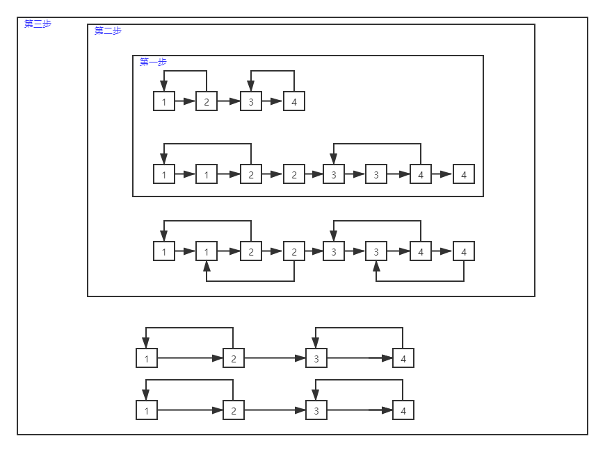

面试题35. 复杂链表的复制
题目在此面试题35．复杂的链表的复制
有三种方法可以做这一道题
- 迭代法
- BFS
- DFS
unordered_map
unordered_map<Node\,Node*> copylist 其实是用来同步复制结点和原结点，例如，原结点到达了head.那么head的复制结点就是copylist[head],相当于把原结点和复制节点绑定了起来
*这样做的好处是:
举个例子若不使用unordered_map函数，我们创建3个复制结点就需要创建3个指针(例如：p1,p2,p3)去指向它，以备后续建立结点相互链接关系时再次访问，但是如果我原节点有10000个，那么我就需要手动创建10000个指针，而用了unordered_map就可以将创建的复制结点与原结点绑定起来，结点间建立链接关系时只需要通过原节点就可以访问相应的复制结点(原结点head的复制节点copylist[head])
下面方法除了优化迭代法的时间复杂度为O(n)，空间复杂度为O(1)，其他的时间空间复杂度都为O(n)
迭代法
1 | |
优化版迭代

这个版本的迭代和普通的迭代有什么区别呢？
其实这个版本的用原节点的next指针代替了unordered_map，用来绑定(定位)复制结点1
2
3
4
5
6
7
8
9
10
11
12
13
14
15
16
17
18
19
20
21
22
23
24
25
26
27
28
29
30
31
32
33
34
35
36
37
38
39class Solution {
public:
Node* copyRandomList(Node* head) {
if(head==NULL)
return head;
Node* cphead;
Node* start;
Node* end;
Node* temp=head;
while(temp!=NULL)
{
Node* copyhead=new Node(temp->val);
copyhead->next=temp->next;
temp->next=copyhead;
temp=temp->next->next;
}
//建立random链接
temp=head;
while(temp!=NULL)
{
if(temp->random!=NULL)
temp->next->random=temp->random->next;
else
temp->next->random=NULL;
temp=temp->next->next;
}
//建立next链接
cphead=head->next; //记录复制头节点的位置，以便return
start=head;
end=head->next;
while(end!=NULL)
{
start->next=end->next;
start=end;
end=end->next;
}
return cphead;
}
};
DFS
因为链表可以变相的可以看为一个图，所以我们可以用DFS解决，DFS递归就相当于保存了上一个节点的信息 (递归就像是一个另类的栈，隐藏的栈和linux0.11进程切换的隐藏栈差不多)．
DFS传递进去的参数是DFS(期望建立链接的结点，哈希表)
DFS递归的创建复杂结点，在返回的时候用copylist[head]->next 和 copylist[head]->random 来建立前后结点的链接关系．1
2
3
4
5
6
7
8
9
10
11
12
13
14
15
16
17
18
19
20class Solution {
public:
//注意unordered_map<Node*,Node*> ©list这里使用了引用
Node* DFS(Node* head,unordered_map<Node*,Node*> ©list)
{
if(head==NULL)
return head;
//copylist[head].count用来计算head在哈希表中出现几次，因为unordered_map是不允许重复的所以只会返回0或１.
if(copylist.count(head)) return copylist[head]; //如果已经创建过了所以就直接返回
copylist[head]=new Node(head->val);
copylist[head]->next=DFS(head->next,copylist); //这一句和下面一句就是结点之间建立链接关系的语句．
copylist[head]->random=DFS(head->random,copylist);
return copylist[head];
}
Node* copyRandomList(Node* head) {
unordered_map<Node*,Node*>copylist;
return DFS(head,copylist);
}
};
BFS
其实和DFS差不多，就是换了一种遍历的方法，有一点和DFS不同就是BFS是在便利途中结点之间就建立了链接，但是DFS是在遍历完结后回退的过程中建立链接
1 | |
本博客所有文章除特别声明外，均采用 CC BY-SA 4.0 协议 ，转载请注明出处！